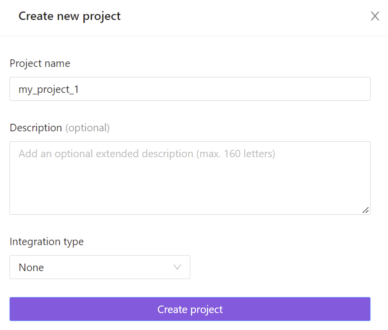
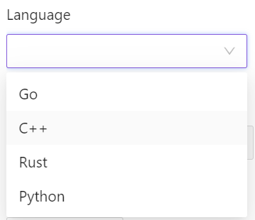
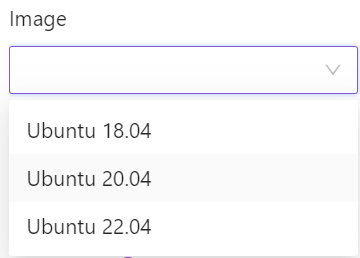

About BondiFuzz
BondiFuzz - Fuzzing as a Service
BondiFuzz is a Fuzzing as a Service solution meant for stress-testing products by quick CI integration.
How can BondiFuzz help?
- Automated search and preventive detection of issues, including software vulnerabilities.
- Improvement of code reliability.
- It helps to automate code coverage in tests, thus facilitating development and reducing its costs.
- Quick fuzzing initiation:
- automated assessment of a vulnerability's severity;
- automated management of resources of various fuzzing solutions.
Why BondiFuzz?
Fuzzing is getting more and more popular. Yet, it may seem like a lot of work, as many fuzzing tools still look more like hacking utilities. Our team has found a way to do fuzzing without access to the source code. Thus, we could move the previous self-hosted version to the cloud.
Integration into development
Integrating BondiFuzz into the development process allows you to improve the quality of your product significantly because continuous fuzzing tests with sufficient code coverage have an accumulative effect.
Solution for different departments
BondiFuzz can be used by various departments involved in both software development and security:
-
Developers: faster bug detection and readily available data for unit tests. The developer is notified of a bug, fixes it, and tests the fixed code.
-
QA: better optimization with automated generation of unit tests based on fuzzing results.
-
Security: automated analysis of error criticality and management of different fuzzing solutions' resources.
If you have any issues when working with BondiFuzz or you want to share your ideas on how to make it better, please contact us at support@bondifuzz.com
Start
Before you start working with BondiFuzz, you have to complete authentication. Enter the login and password you received from the admin. You can change the password in the account settings later. Once authentication is complete, you will be redirected to the page with fuzzing test suite.
Tabs
The web interface of BondiFuzz has the following tabs:
Projects — projects created by the user and a default project created when a new user was created.
Fuzzers — fuzzing test suites created by the user. The user can start and stop a fuzzing test suites, add new versions and delete them.
FAQ — frequently asked questions.
Documentation — BondiFuzz documentation.
Trash — deleted fuzzers go here.
The Fuzzers tab has the following tabs:
Versions — after applying changes to a fuzzing test suite, the user can create a new version. Thus, you can compare the results of the two versions or roll back to the previous one if the changes are unsatisfactory.
Crashes — crashes detected by a fuzzing test suites; they can be sorted by fuzzing test suite's version.
Statistics — the stats from the fuzzing results. It shows the metrics that represent the efficiency of fuzzing test suites. You can choose a fuzzing test suite's version and time period to view the stats for it.
You need the following files for fuzzing:
Binaries — the fuzzing test suite binary.
Seeds — this is a directory with files whose content has to be valid for the target program or function. Seeds will undergo numerous mutations during fuzzing, which increases code coverage. During fuzzing, seeds are transformed into a corpus. A corpus is a set of test cases that has increased code coverage during the fuzzing of the target program or function. At first, a corpus contains seeds; then -- their mutations, the mutations' mutations, and so on.
Options and environment — additional options.
Image — agent's docker image. An agent is a program that is run when a container is started and starts the fuzzing test suite itself. An agent collects fuzzing results and stats.
Projects
The fuzzing farm allows you to create projects inside which fuzzers are created, which makes it easier to work with fuzzing test suites. In addition to the default project, users can can create their own.
While creating or editing a project, you can create a task tracker integration. Thus, the bugs detected by a fuzzer will be sent to the task tracker. This facilitates the cooperation between the security and development teams.
Create a project
-
In the Projects tab, click
Add a new project. -
Enter a project name.

The project name has to be unique.
-
Project description is optional
-
Provide the number of nodes and CPU and RAM values.
The CPU value is measured as the number of cores and can be: 2,4,6,8,10,12,14,16,20,24,28,32,36,40,44,48,52,56,60,64,68,72,76,80,84,88,92,96.
The RAM value is measured in GiB and is equal to the CPU value times a coefficient of 1 to 16 but cannot be more than 640 GiB.
- If you need to integrate it with a task tracker, you can choose it in the drop-down list. You can create an integration for an existing project by clicking
Editand going toIntegrations.
Bug tracker integrations
BondiFuzz can be integrated with Jira and YouTrack task trackers.
When a fuzzing test suite detects a crash, an issue will be created in the task tracker.
Issue tracking with Jira
To create a Jira integration, go to the Integration tab while editing a project and choose an integration type.

To create an integration, you must have an existing project in Jira.
Priority and issue type should be assigned according to the priorities and types existing in the tracker.
After creating a project in BondiFuzz, load a fuzzing test suite and run it. If it detects a crash, an issue with a detailed description will be created in Jira. If the fuzzing test suite finds the duplicates of a crash, the issue will be automatically updated.
You can edit existing integrations. If you switch to a different project in Jira, the previously detected crashes and their duplicates will be aggregated in the old project. Only crashes will appear in the new one.
YouTrack integration
When creating a project, choose YouTrack in the drop-down list of integration options.
Before creating an integration, you have to create a project in YouTrack.
User identification is performed using the token generated in YouTrack.
You can edit an existing integration. Just like with Jira, when you switch YouTrack projects, detected crashes remain in the old project along with the information about duplicates. The new project will only have new crashes.
Delete a project
You can delete a project by clicking Delete.
Choose one of the actions in the pop-up window:

Move to Trash: the project will be stored in Trash for 30 days, and it can be recovered. After that period, it will be deleted permanently.
Click Cancel on Project is being deleted, to cancel the operation.
You can find deleted project in the Deleted tab.
You can restore a deleted project by clicking Restore.
Delete Permanently delets the project permanently; the project cannot be restored.
The user can remove all projects from the bin by clicking Empty user bin.
You can cancel these actions by clicking Cancel on the notification. Deleted projects cannot be restored.
Fuzzers
The fuzzing farm allows you to upload previously created fuzzing test suite as binary files.
To facilitate the tracking of changes history, you can upload different versions of the same fuzzing test suite.
Create a fuzzer
To create a Fuzzer, click +Fuzzer in the Fuzzers tab.
- Enter the fuzzer's name

The name must be unique
-
Fuzzer description is optional
-
Choose a programming language (currently,
Go,C++,RustandPythonare supported)
 -
Choose the fuzzer type

-
Choose an image (currently, only the administrator can upload images)
 -
Set CPU, RAM, and tmpfs values.
The CPU value is measured in mcpu and ranges from 500 to 2000.
The RAM value is measured in MiB and ranges from 500 to 5000.
The tmpfs value is measured in MiB and ranges from 100 to 2000.
- Upload these files:
- the fuzzing test suite's binary
- seeds — input data for the fuzzing test suite (optional)
- config — file with additional options (optional)
- After it's uploaded, you can start, stop, and restart the fuzzer.


Restart means clearing the fuzzing test suite's state, but the detected crashes, stats, and corpora are saved.
- The following fuzzing test suite statuses exist:
Unverifying— the fuzzing test suite has not loaded completely.Verifying— verification of the files uploaded to the farm.Running— the fuzzing test suite is running as expected.Stopped— the fuzzing test suite has been stopped.
fuzzing test suite states:
Ok— the fuzzing test suite is working without errors.Warning— there are some issues with the fuzzing test suite.Error— an error that prevents the fuzzing test suite from working.
Possible fuzzing test suite combinations of states and statuses:
Unverifying Ok— the fuzzing test suite's files are being loaded as expected.Verifying Ok— fuzzing test suite verification is in process.Unverifying Error— the user made erros in the cofig file, and the farm cannot read it.Verifying Ok— the confid file has been corrected and fuzzing test suite restarted.Running Ok— the fuzzing test suite is up and running.Running Warning— the fuzzing test suite has been working for a long time; supposedly, all errors has been found.Stopped Warning— the fuzzing test suite has been working for too long; there's no need for it to be running anymore.
By hovering over Warning and Error, you will see a description of the issue.
- Adding a new fuzzing test suite version
When you are adding a new version of a fuzzing test suite, you do not have to modify the one already running in BondiFuzz. You can add a new version. This allows comparing the results of all uploaded versions of a fuzzing test suite. Click + Add version in the top right-hand corner of Fuzzers to add a version.
A version name is generated automatically based on the date and time. This name can be changed, and the description is optional.

You can run just one version of a fuzzing test suite; versions of different fuzzing test suites can be running simultaneously.
Creating a fuzzing test suite config file
A configuration file is an auxiliary file woth additional options necessary for the correct operation of a fuzzing test suite.
AFL fuzzing test suite example
Here's an example of a config file for an AFL fuzzer:
{
"target": {
"path": "url-fuzz-target",
},
"env": {
"MY_ENV": "val"
},
"options": {
"afl": {
"min_length": 50,
}
}
}
target — path to the fuzzing test suite's binary.
Options:
mode — fuzzer's mode. Currently, BondiFuzz only supports Normal.
schedule — algorithms for assessing inout data that allow us to understand what to mutate to get input that increases code coverage. Read more about it here.
dict — dictionary that sometimes will provide values instead of random mutations.
file_extension — if the fuzzing test suite's binary receives file paths as input, you can specify the file extension here.
min_length — minimum input length.
max_length — maximum input length.
queue_selection — in AFL, all input is queued; with this option you can choose the order: by weight or by position in the queue.
python_module — AFL allows you to write a module in Python and use it as a mutator. Read more about it here.
custom_mutator_library — custom library what will be used as a mutator. Read more about it here.
custom_mutator_only — all calls will be processed by the module/library from the options above.
hang_timeout — after this period, input is deemed as a hang.
map_size — the size of the array that stores code coverage information.
Preloading libraries for AFL
AFL-PRELOAD is a way to upload a library to a binary. AFL_PRELOAD is required when the fuzzing test suite uses external dependencies and you need to upload libraries to a specified path. For example:
AFL_PRELOAD=/path/to/libcompcov.so
LibFuzzer config file
Here's an example of a config file for LibFuzzer:
{
"target" : {
"path": "my_binary",
}
"env": {
"MY_ENV": "val"
},
"options": {
"libfuzzer": {
"max_len": "512"
},
}
}
target — path to the fuzzing test suite's binary file.
Options:
max_len — maximum inout length.
dict — dictionary that is used for seeds.
prefer_small — if it equals 1, smaller input is prefered.
timeout — timeout in seconds.
report_slow_units — upon reaching this threshold input will be interpreted as invalid.
only_ascii — if it equals 1, only ASCII input is received.
detect_leaks — if it equals 1, the fuzzer attempts to detect data leaks.
len_control — defines how fast the length limit is extended.
mutate_depth — number of mutations for input data.
You can find more options here.
Preloading libraries for LibFuzzer
LD_PRELOAD — is a way to upload a library to a binary. LD_PRELOAD is required when the fuzzing test suite uses external dependencies and you need to upload libraries to a specified path. For example:
LD_PRELOAD": "./libs/libarchive.so.13 ./libs/libicudata.so.60 ./libs/libicuuc.so.60 ./libs/liblzo2.so.2 ./libs/libxml2.so.2
If you don't want to list all libraries, use LD_LIBRARY_PATH to provide the path to the folder with them. For example:
LD_LIBRARY_PATH": "./libs
Example of creating fuzzing test suite
For demonstration, we will use a fuzzing test suite for the notorious Heartbleed vulnerability from Fuzzer Test Suite. (See appendix)
Binary file
After compilation we get the fuzzing test suite's binary. It will have a default name, but for convenience we can rename it as target.
Upload the archive with fuzzing test suite files to the fuzzing farm.
cd path_to_fuzzer
tar -czf binaries.tar.gz openssl-1.0.1f-fsanitize_fuzzer
In the case of Heartbleed, we have to add a folder with keys to the archive.
Config file
You can upload config.json with additional options to the farm.
{
"target" : {
"path": "openssl-1.0.1f-fsanitize_fuzzer"
}
"options": {
"libfuzzer": {
...
}
}
}
Seeds file
Seeds must be archived without placing them in a folder.
cd path_to_seeds
tar -czf seeds.tar.gz seed1 seed2
Execution
Upload these files to the farm and select the Ubuntu image.
How fuzzing test suites work in the farm
To start working with a fuzzing test suite, you have to upload tar.gz archives (fuzzing test suite's binary and seeds) and the config file tp the farm. Only the binary is mandatory.
Once the files are uploaded, file types and the json's validity are verified. At this point, the fuzzing test suite is in Unverified OK state. To start the verification process, click Start, and the fuzzing test suite will be moved to the queue of unverified fuzzing test suites. This queue has priority over the main one, so if there are fuzzing test suites that require verification, they will be executed first.
When it's time to run the fuzzing test suite, it will be run in the firstrun mode with the limit of 10000 executions. This is done to make sure that the uploaded binary file is valid. If the fuzzing test suite finds a crash in this mode, it will be reflected in the output. If there are any errors, you will be notified about them.
Then, the fuzzing test suite is moved to the main queue to be executed in the regular mode.
The fuzzing farm has a system of evaluating a fuzzing test suite's relevance: each fuzzing test suite has its weight. If a fuzzing test suite finds new crashes and/or code coverage grows, its coverage is increased. As the weight increases, the fuzzing test suite is run more frequently. The more often a fuzzing test suite is run, the more crashes it finds and the faster code coverage grows.
If a fuzzing test suite has been working without new crashes or increasing code coverage for a while, its weight is decreased. If a fuzzing test suite's weight continues to drop, it will only find crash duplicates and not the new ones.
Examples of fuzzing test suite
To better understand how to work in the fuzzing farm, we can take an existing fuzzing test suite that will definitely find some errors.
Uploading files to BondiFuzz
You need to upload a binary file and, if you have them, seeds and config files.
Binary
After compilation, we get the fuzzing test suite's binary. It will be named by default, but we can change its name to target for convenience.
Fuzzing test suite files are uploaded in archives.
cd path_to_fuzzer
tar -czf binaries.tar.gz fuzzgoat
Config file
You can also upload a config file config.json with additional options.
{
"target" : {
"path": "my_fuzzer",
}
"env": {
"MY_ENV": "val"
},
"options": {
"libfuzzer": {
"max_len": "512"
},
}
}
Seed files
Seeds have to be archived without being placed in a folder.
cd path_to_seeds
tar -czf seeds.tar.gz seed1 seed2
Running a fuzzing test suite in BondiFuzz
Upload these files to the fuzzing farm. First, you have to choose an available Ubuntu image. It has to be the same version as the one used on your local machine during compilation.
Delete a fuzzer
To delete a fuzzer, go to Fuzzers, choose a fuzzer, and click Delete.
In the pop-up window, choose one of the actions:

-
Move to Trash— fuzzer will be moved to the trash and kept there for 30 days, during which it can be recovered. -
Delete Permanently— fuzzer will be deleted without options to recover it.
A fuzzing test suite's version can be recovered from trash within 30 days after deletion. Go to Trash, choose a fuzzing test suite that you want to restore, choose a version and click Restore. You will see a notification saying Version is restoring, where you can cancel fuzzing test suite recovery.
You can also delete a fuzzing test suite's version from the trash completely by clicking Delete. On the notification saying Version is permanently deleted, you can click Cancel, to reverse this action and keep the version in the trash.
You can also delete all versions of a fuzzing test suite from the trash. In the Trash tab, click Delete and confirm.
You can permanently delete all fuzzing test suite versions related to a project. Go to Trash, click Empty project bin and confirm.
Working with BondiFuzz CLI
Installation
Python 3.7 or higher is required.
Clone the project:
git clone https://github.com/bondifuzz/bondi-python.git
Install it using pip:
pip install bondi-python
Once installed, run it using --help:
bondi --help
You can enable autocompletion of commands using an additional framework:
bondi --install-completion
Configuration
Initialize server connection:
bondi config init
Enter the server URL, username, and password.
Server url: https://demo.bondifuzz.com
Username: username
Password: ***
OK - Initialization successful
You can refresh the connection with a command like this one:
bondi config set username user_1
OK - Config updated successfully
Get info about an established connection:
bondi config show
-------- ------------------
url demo.bondifuzz.com
username **************name
password **************4321
-------- ------------------
Get the URL of the connected server:
bondi config get url
https://demo.bondifuzz.com
Get the username of the account connected to the server:
bondi config get username
username
Managing projects
Create a new project:
bondi projects create
You need to give it a unique name and provide CPU and RAM values. A unique id will be assigned to the project automatically.
Name: project_1
Node cpu: 40
Node ram: 360
---- ---------
id 10550740
name project_1
---- ---------
The CPU value is measured as the number of cores and can be: 2, 4, 6, 8, 10, 12, 14, 16, 20, 24, 28, 32, 36, 40, 44, 48, 52, 56, 60, 64, 68, 72, 76, 80, 84, 88, 92, 96. You can Tab to choose a value.
The RAM value is measured in GiB and is equal to the CPU value times a coefficient of 1 to 16 but cannot be more than 640 GiB. You can Tab to choose a value.
Get project information:
bondi projects get 10550740
Provide the project's id or name.
----- ---------
Project name project_1
Description Default project
Pool status Ready
Node group CPU per node: 4 cores, RAM per node: 8GB, Node count: 1
Pool resources CPU in total: 3720 mcpu, RAM in total: 5714MB, Nodes ready: 1
----- ---------
Get the list of projects with id's and descriptions:
bondi projects list
+----------+--------------+------------------+
| id | name | brief |
|----------+--------------+------------------|
| 10550740 | project_1 | My first project |
| 9845728 | project_2 | No description |
| 8953832 | project_3 | No description |
| 2755294 | default | Default project |
+----------+--------------+------------------+
Change project name:
bondi projects update --id 10550740 --new-name project_2
The table shows the new and old project names.
+------------+-----------+-----------+
| property | old | new |
|------------+-----------+-----------|
| name | project_1 | project_2 |
+------------+-----------+-----------+
Change project description:
bondi projects update --id 10550740 --new-description no description
The table shows the new and old project descriptions.
+-------------+-------+----------------+
| property | old | new |
|-------------+-------+----------------|
| description | none | no description |
+-------------+-------+----------------+
For convenience, you can set a current project as the default one, so you won't have to enter its name and it will be entered automatically.
bondi projects set-default project_1
View the default project:
bondi projects get-default
Cancel setting a project as default:
bondi projects unset-default
Delete project:
bondi projects delete project_1
Recover project from trash:
bondi projects restore project_1
Delete project completely:
bondi projects erase project_1
Working with fuzzers
Create a fuzzer:
bondi fuzzers create
When creating a fuzzer, you must specify its type, programming language, and the project it's related to. A fuzzer's name has to be unique in the context of a project. Fuzzers related to different projects can be named the same. A fuzzer will be automatically assigned a unique id.
Name: fuzzer_1
Description: none
Fuzzer type: AFL
Fuzzer lang: Cpp
Project: project_2
---- --------
id 10591666
name fuzzer_1
---- --------
Get fuzzer information:
bondi fuzzers get fuzzer_1
You will see all information about the fuzzer.
Fuzzer: fuzzer_1
-------------- --------
id 10591666
name fuzzer_1
type AFL
lang Cpp
ci_integration False
description none
-------------- --------
Get the list of fuzzers (you have to provide the project name):
bondi fuzzers list
Get a list of possible configurations programming language — fuzzer engine:
bondi fuzzers show-configurations
------ --------------
C++ AFL, LibFuzzer
Go LibFuzzer
Rust LibFuzzer
Python LibFuzzer
------ --------------
Change fuzzer name providing the project name:
bondi fuzzers update fuzzer_1 -n fuzzer_2
Project: project_2
+-----------------+-------------+-------------+
| Property name | Old value | New value |
|-----------------+-------------+-------------|
| Project name | fuzzer_1 | fuzzer_2 |
+-----------------+-------------+-------------+
Change fuzzer description providing the project name:
bondi fuzzers update fuzzer_1 -d description
Project: project_2
+-----------------+----------------+-------------+
| Property name | Old value | New value |
|-----------------+----------------+-------------|
| Description | No description | description |
+-----------------+----------------+-------------+
For convenience, you can set a current fuzzer as the default one, so you won't have to enter its name and it will be entered automatically.
bondi fuzzers set-default fuzzer_1
View the default fuzzer:
bondi fuzzers get-default
Cancel setting a fuzzer as default:
bondi fuzzers unset-default
Delete fuzzer:
bondi fuzzers delete fuzzer_1
Recover fuzzer from trash:
bondi fuzzers restore fuzzer_1
Delete fuzzer completely:
bondi fuzzers erase fuzzer_1
Download fuzzer corpus:
bondi fuzzers download-corpus fuzzer_1
Creating fuzzer versions
Once a fuzzer is created, you have to create its first version and the next versions after that. This would allow to keep the original fuzzer while making changes to it and the tested code.
The CPU value is measured in mcpu and ranges from 500 to 2000.
The RAM value is measured in MiB and ranges from 500 to 5000.
The tmpfs value is measured in MiB and ranges from 100 to 2000.
Create a fuzzer version:
bondi revisions create -n revision_1 -i 53823967 -f fuzzer_1 -p project_1 --cpu 600 --ram 1000 --tmpfs 300
------------- ----------
ID 64321403
Revision name revision_1
------------- ----------
If you do not provide a version name in the command, it will be generated automatically. A unique ID is assigned to a version as well.
View the list of all fuzzer versions:
bondi revisions list
Get information about a specific version:
bondi revisions get revision_1 -f fuzzer_1
For convenience, you can set the current fuzzer as the default one, so you won't have to enter its name and it will be entered automatically.
bondi revisions set-default revision_1
View the default version:
bondi revisions get-default
Cancel setting a version as default:
bondi revisions unset-default
Delete a version:
bondi revisions delete revision_1
Recover a version from trash:
bondi revisions restore revision_1
Delete a version completely:
bondi revisions erase revision_1
Fuzzer corpora can be copied and pasted between versions of the same fuzzer:
bondi revisions copy-corpus revision_1 revision_2
You can only paste to a version that hasn't been run yet.
Images
You have to choose an image for every fuzzer. Here's how to view all available images:
bondi images list-available -l Cpp -e LibFuzzer -p project_1
Each image has a unique ID.
Currently, only farm admins can upload images. User can send requests for images through support.
Uploading fuzzing test suite files
Create and tested files are uploaded to the farm with a command like this:
bondi revisions upload-files -p project_1 -f fuzzer_1 revision_1 --binaries-path path_to_fuzzer/binaries.tar.gz --config-path path_to_fuzzer/config.json --seeds-path path_to_fuzzer/seeds.tar.gz
binaries [####################################] 100%
seeds [####################################] 100%
config [####################################] 100%
OK - Files uploaded successfully
You can go to the directory with fuzzing test suite files and user a simpler command:
bondi revisions upload-files -p project_1 -f fuzzer_1 revision_1 --binaries binaries.tar.gz --config config.json --seeds seeds.tar.gz
Download fuzzing test suite files:
bondi revisions download-files revision_1 -f fuzzer_1 -p default
Working with fuzzers
Run the fuzzer:
bondi revisions start revision_1
If everything's okay, you will see this message: OK - Revision started
Note: the farm's architecture implies that a fuzzer versions is executed. You cannot run several versions of the same simultaneously, but you can run versions of different fuzzers.
Stop the fuzzed:
bondi revisions stop revision_1
Restart the fuzzer:
bondi revisions restart revision_1
Upon a restart all fuzzer data are cleared, only the corpus remains.
Corpora can be copied between fuzzer versions:
bondi revisions copy-corpus revision_1 revision_2
Fuzzer results
To get a list of crashes for all fuzzer versions, provide the project name:
bondi crashes list -f my_fuzzer -p project_1
or use
bondi crashes list
You can also get list of crashes for a version:
bondi crashes list -r revision_1
To get crash data, enter the crash ID, fuzzer name and the related project name:
bondi crashes get 10327133 -f my_fuzzer -p project_1
To get detailed crash data, enter the crash ID, fuzzer name and the related project name:
bondi crashes get-details 10327133 -f my_fuzzer -p project_1
Here's the output:
INFO: Seed: 3128728610
INFO: Loaded 1 modules (35943 inline 8-bit counters): 35943 [0xad8690, 0xae12f7),
INFO: Loaded 1 PC tables (35943 PCs): 35943 [0x94f0e8,0x9db758),
/mnt/tempfs/binaries/openssl-1.0.1f-fsanitize_fuzzer: Running 1 inputs 2000000 time(s) each.
Running: /mnt/tempfs/binaries/leak-56aa9f9652536ca63aa8251540ae7007a017c735
==16==WARNING: invalid path to external symbolizer!
==16==WARNING: Failed to use and restart external symbolizer!
=================================================================
==16==ERROR: LeakSanitizer: detected memory leaks
Direct leak of 32 byte(s) in 1 object(s) allocated from:
#0 0x52447d (/mnt/tempfs/binaries/openssl-1.0.1f-fsanitize_fuzzer+0x52447d)
#1 0x6013fb (/mnt/tempfs/binaries/openssl-1.0.1f-fsanitize_fuzzer+0x6013fb)
#2 0x6588c1 (/mnt/tempfs/binaries/openssl-1.0.1f-fsanitize_fuzzer+0x6588c1)
#3 0x56afb8 (/mnt/tempfs/binaries/openssl-1.0.1f-fsanitize_fuzzer+0x56afb8)
#4 0x55c810 (/mnt/tempfs/binaries/openssl-1.0.1f-fsanitize_fuzzer+0x55c810)
#5 0x59f242 (/mnt/tempfs/binaries/openssl-1.0.1f-fsanitize_fuzzer+0x59f242)
#6 0x59a1d1 (/mnt/tempfs/binaries/openssl-1.0.1f-fsanitize_fuzzer+0x59a1d1)
#7 0x556bcd (/mnt/tempfs/binaries/openssl-1.0.1f-fsanitize_fuzzer+0x556bcd)
#8 0x45d7c1 (/mnt/tempfs/binaries/openssl-1.0.1f-fsanitize_fuzzer+0x45d7c1)
#9 0x448ed2 (/mnt/tempfs/binaries/openssl-1.0.1f-fsanitize_fuzzer+0x448ed2)
#10 0x44ef3e (/mnt/tempfs/binaries/openssl-1.0.1f-fsanitize_fuzzer+0x44ef3e)
#11 0x476a02 (/mnt/tempfs/binaries/openssl-1.0.1f-fsanitize_fuzzer+0x476a02)
#12 0x7f38ee67ed09 (/lib/x86_64-linux-gnu/libc.so.6+0x26d09)
Indirect leak of 32 byte(s) in 1 object(s) allocated from:
#0 0x52447d (/mnt/tempfs/binaries/openssl-1.0.1f-fsanitize_fuzzer+0x52447d)
#1 0x6013fb (/mnt/tempfs/binaries/openssl-1.0.1f-fsanitize_fuzzer+0x6013fb)
#2 0x6588e1 (/mnt/tempfs/binaries/openssl-1.0.1f-fsanitize_fuzzer+0x6588e1)
#3 0x56afb8 (/mnt/tempfs/binaries/openssl-1.0.1f-fsanitize_fuzzer+0x56afb8)
#4 0x55c810 (/mnt/tempfs/binaries/openssl-1.0.1f-fsanitize_fuzzer+0x55c810)
#5 0x59f242 (/mnt/tempfs/binaries/openssl-1.0.1f-fsanitize_fuzzer+0x59f242)
#6 0x59a1d1 (/mnt/tempfs/binaries/openssl-1.0.1f-fsanitize_fuzzer+0x59a1d1)
#7 0x556bcd (/mnt/tempfs/binaries/openssl-1.0.1f-fsanitize_fuzzer+0x556bcd)
#8 0x45d7c1 (/mnt/tempfs/binaries/openssl-1.0.1f-fsanitize_fuzzer+0x45d7c1)
#9 0x448ed2 (/mnt/tempfs/binaries/openssl-1.0.1f-fsanitize_fuzzer+0x448ed2)
#10 0x44ef3e (/mnt/tempfs/binaries/openssl-1.0.1f-fsanitize_fuzzer+0x44ef3e)
#11 0x476a02 (/mnt/tempfs/binaries/openssl-1.0.1f-fsanitize_fuzzer+0x476a02)
#12 0x7f38ee67ed09 (/lib/x86_64-linux-gnu/libc.so.6+0x26d09)
SUMMARY: AddressSanitizer: 64 byte(s) leaked in 2 allocation(s).
INFO: a leak has been found in the initial corpus.
INFO: to ignore leaks on libFuzzer side use -detect_leaks=0.
To download crash data, enter the crash ID, fuzzer name and the related project name:
bondi crashes download -c 10327133 -f my_fuzzer -p project_1
All data will be saved to a .crash file.
crash [####################################] 100%
OK - Saved to 10327133.crash
Viewing stats
The fuzzing farm keeps the stats on fuzzers.
You can view the stats for a fuzzer version:
bondi statistics show -r revision_1 -f fuzzer_1 -p project_1
For detailed stats you can view graphs for each of the following parameters:
- corpus_entries
- edge_cov
- execs_per_sec
- known_crashes
- unique_crashes
- corpus_size
- execs_done
- feature_cov
- peak_rss
bondi statistics show-chart -c unique_crashes -r revision_1 -f fuzzer_1 -p project_1
Task tracker integration
The BondiFuzz CLI utility allows you to integrate task trackers.
To create a Jira integration, you have to provide a URL, the user's login/email and password/token, Jira project name, issue type, priority, integration name (it must be unique), integration type, and BondiFuzz project name.
bondi integrations create --jira-url https://demo.jira.com --jira-username User@user.com --jira-password passw123 --jira-project MP --jira-issue-type Task --jira-priority Medium -n integration_1 -t Jira -p project_1
The integration will get a unique ID.
Delete an integration:
bondi integrations delete -p project_1 integration_1
Disable an integration by providing the project name in the farm and the integration's ID/name:
bondi integrations disable -p project_1 integration_1
You can enable a previously disabled integration by providing the project name and integration ID/name:
bondi integrations enable -p project_1 integration_1
Для получения детальной информации об интеграции нужно указать ID/название интеграции и соответствующий проект:
bondi integrations get -p project_1 17924052
To get detailed information about an integration, provide its ID/name and project name:
bondi integrations get-config -p project_1 17924052
Get a list of integrations by project name:
bondi integrations list -p project_1
Change integration name:
bondi integrations update -p project_1 17924052 -n integration_2
Appendix
We've created fuzzing test suite samples for different programming languages. Currently they are available for:
- C++
- Rust
- Go
- Python
- Java (This language is not supported, but we are working on it.)
- Java with JQF (This language is not supported, but we are working on it.)
- Java Script (This language is not supported, but we are working on it.)
The list of languages will grow.
C++
You can use LibFuzzer to fuzz C++ code. It's a library meant for fuzzing other libraries distributed with Clang, a project by LLVM.
Heartbleed example
As an example, let's take the famous heartbleed vulnerability found in OpenSSL.
First, we have to install the vulnerable version of the library.
curl -O https://ftp.openssl.org/source/old/1.0.1/openssl-1.0.1f.tar.gz
tar xf openssl-1.0.1f.tar.gz
cd openssl-1.0.1f/
./config
make CC="/usr/local/bin/clang -g -fsanitize=address,fuzzer-no-link"
cd ..
The fuzzing test suite looks like this:
#include "openssl/ssl.h"
#include "openssl/err.h"
#include <assert.h>
#include <stdint.h>
#include <stddef.h>
SSL_CTX *Init() {
SSL_library_init();
SSL_load_error_strings();
ERR_load_BIO_strings();
OpenSSL_add_all_algorithms();
SSL_CTX *sctx;
assert (sctx = SSL_CTX_new(TLSv1_method()));
assert(SSL_CTX_use_certificate_file(sctx, "../runtime/server.pem",
SSL_FILETYPE_PEM));
assert(SSL_CTX_use_PrivateKey_file(sctx, "../runtime/server.key",
SSL_FILETYPE_PEM));
return sctx;
}
extern "C" int LLVMFuzzerTestOneInput(const uint8_t *Data, size_t Size) {
static SSL_CTX *sctx = Init();
SSL *server = SSL_new(sctx);
BIO *sinbio = BIO_new(BIO_s_mem());
BIO *soutbio = BIO_new(BIO_s_mem());
SSL_set_bio(server, sinbio, soutbio);
SSL_set_accept_state(server);
BIO_write(sinbio, Data, Size);
SSL_do_handshake(server);
SSL_free(server);
return 0;
}
The files server.key and server.pem are generated using the following command:
openssl req -x509 -newkey rsa:512 -keyout server.key -out server.pem -days 9999 -nodes -subj /CN=a/
Here's the content of CMakeLists.txt:
project("heartbleed-fuzzer")
set(CMAKE_CXX_COMPILER "clang++")
set(SRC "~/heartbleed")
set(OPENSSL_PATH ${SRC}/openssl-1.0.1f)
add_executable(heartbleed_fuzzer heartbleed.cpp)
target_include_directories(heartbleed_fuzzer PRIVATE ${OPENSSL_PATH}/include)
target_compile_options(heartbleed_fuzzer PRIVATE -fsanitize=fuzzer,address)
target_link_options(heartbleed_fuzzer PRIVATE -fsanitize=fuzzer,address)
target_link_libraries(heartbleed_fuzzer ${OPENSSL_PATH}/libssl.a ${OPENSSL_PATH}/libcrypto.a)
Now, it's time to build and run the fuzzuer:
mkdir -p build
rm -rf build/*
cd build
cmake ..
make
./heartbleed_fuzzer
Rust
How to write a fuzzing test suite in Rust.
Example 1: cargo-fuzz (libFuzzer)
First, install cargo-fuzz:
cargo install cargo-fuzz
You can use rust-url, a URL library for Rust.
Clone the repository:
git clone https://github.com/servo/rust-url.git
And run this command:
git checkout bfa167b4e0253642b6766a7aa74a99df60a94048,
to go to a specific revision that has a syntax analysis error.
Then, initialize cargo-fuzz:
cargo fuzz init
A directory called fuzz will be created. Place the fuzzing test suite's code to fuzz/fuzz_targets/fuzz_target_1.rs:
#![allow(unused)] #![no_main] fn main() { #[macro_use] extern crate libfuzzer_sys; extern crate url; fuzz_target!(|data: &[u8]| { if let Ok(s) = std::str::from_utf8(data) { let _ = url::Url::parse(s); } }); }
and corpus to fuzz/corpus/fuzz_target_1/:
mkdir in
echo "tcp://example.com/" > in/url
echo "ssh://192.168.1.1" > in/url2
echo "http://www.example.com:80/foo?hi=bar" > in/url3
Use this command to run the fuzzing test suite:
RUST_BACKTRACE=1 cargo fuzz run
The fuzzing test suite's binary can be found here: rust-url/fuzz/target/x86_64-unknown-linux-gnu/release/fuzz_target_1
You have to compress the binary and the corpus into an archive which you will upload to BondiFuzz.
Example 2: AFL
To start working with the AFL-fuzzer install:
cargo install afl
Clone:
git clone https://github.com/servo/rust-url.git
and go to a vulnerable revision.
Then, initialize:
cargo new --bin url-fuzz-target
The source with the fuzzing test suite has to be here url-fuzz-target/src/main.rs
Add the following strings to url-fuzz-target/Cargo.toml:
[dependencies]
afl = "*"
url = { path = ".."} // это путь к rust-url/ относительно rust-url/url-fuzz-target
Build the fuzzing test suite:
cargo afl build
Create a directory called in where you will store the corpus used for libFuzzer.
Run the fuzzing test suite first going to the directory url-fuzz-target:
cargo afl fuzz -i in -o out target/debug/url-fuzz-target
Go
Using go-fuzz in libfuzzer mode
Installation
Run this commands:
export GO111MODULE=on
go get github.com/dvyukov/go-fuzz/go-fuzz-build
go get github.com/dvyukov/go-fuzz/go-fuzz
Example 1: Low difficulty
Let's consider division by zero as an example.
Required version of go: go1.18.2 linux/amd64.
Write the following code to your_path/fuzz.go:
package zero
func Fuzz(data []byte) int {
if len(data) < 10{
return 0
}
a := data[0]
b := data[1]
c := a / (b-100)
_ = c
return 0
}
Build:
your_path$ go-fuzz-build -libfuzzer -func=Fuzz -o zero.a
your_path$ clang -fsanitize=fuzzer zero.a -o divzero-fuzzer
Options for go-fuzz-build:
-libfuzzer- enablelibfuzzermode-func=Fuzz- define a function that will be subject to fuzzing(in this case it'sFuzz)-o zero.a- name of a static library storing the compiled code (arbitrary name)
Options for clang:
-fsanitize=fuzzer- enable a fuzzing mode in which the compiler will include all dependencies forlibfuzzerzero.a- library with the fuzzing test suite's logic-o divzero-fuzzer- fuzzing test suite name
Run with this command:
your_path$ ./divzero-fuzzer
Example 2: Medium difficulty
This example is based on this article. The target is Vault, a tool for secure access to classified data (function XORBase64).
Required version of go: go1.18.2 linux/amd64.
Install vault:
export GO111MODULE=on
go get github.com/hashicorp/vault
cd $GOPATH/src/github.com/hashicorp/vault/sdk/helper/xor
Write the following code to fuzz.go:
package xor
func Fuzz(data []byte) int {
_, _ = XORBase64(string(data), string(data))
return 1
}
The package name is the same as in xor.go with XORBase64.
Build:
sdk/helper/xor$ go-fuzz-build -libfuzzer -func=Fuzz -o Fuzz.a
sdk/helper/xor$ clang -fsanitize=fuzzer Fuzz.a -o xor-fuzzer
Run with this command:
sdk/helper/xor$ ./xor-fuzzer
Example 3: Medium difficulty [2]
This is based on this article.
The target is the DNS library v1.1.25 and its functions Unpack and PackBuffer.
Required version of go: go1.13.8 linux/amd64.
Install:
your_path$ export GO111MODULE=on
your_path$ go mod init fuzz
your_path$ go get github.com/miekg/dns@v1.1.25
The go mod init command is required to download a specific versions of the repository.
Write the following code to fuzz.go:
package fuzz
import (
"github.com/miekg/dns"
"bytes"
"encoding/hex"
"os"
)
func Fuzz(rawMsg []byte) int {
var (
msg = &dns.Msg{}
buf, bufOne = make([]byte, 100000), make([]byte, 100000)
res, resOne []byte
unpackErr, packErr error
)
if unpackErr = msg.Unpack(rawMsg); unpackErr != nil {
return 0
}
if res, packErr = msg.PackBuffer(buf); packErr != nil {
return 0
}
for i := range res {
bufOne[i] = 1
}
resOne, packErr = msg.PackBuffer(bufOne)
if packErr != nil {
println("Pack failed only with a filled buffer")
panic(packErr)
}
if !bytes.Equal(res, resOne) {
println("buffer bits leaked into the packed message")
println(hex.Dump(res))
println(hex.Dump(resOne))
os.Exit(1)
}
return 1
}
Build:
your_path$ go-fuzz-build -libfuzzer -func=Fuzz -o Fuzz.a
your_path$ clang -fsanitize=fuzzer Fuzz.a -o dns-fuzzer
Corpus
Before running a fuzzing test suite, you have to create a corpus.
This is based on the dump Network_Join_Nokia_Mobile.pcap.
Clone the dump:
mkdir corpus
cd corpus
git clone https://github.com/miekg/pcap
Write the following code to corpus/gen_corp.go:
package main
import (
"crypto/rand"
"encoding/hex"
"log"
"os"
"strconv"
"github.com/miekg/pcap"
)
func fatalIfErr(err error) {
if err != nil {
log.Fatal(err)
}
}
func main() {
handle, err := pcap.OpenOffline(os.Args[1])
fatalIfErr(err)
b := make([]byte, 4)
_, err = rand.Read(b)
fatalIfErr(err)
prefix := hex.EncodeToString(b)
i := 0
for pkt := handle.Next(); pkt != nil; pkt = handle.Next() {
pkt.Decode()
f, err := os.Create("p_" + prefix + "_" + strconv.Itoa(i))
fatalIfErr(err)
_, err = f.Write(pkt.Payload)
fatalIfErr(err)
fatalIfErr(f.Close())
i++
}
}
Build:
corpus$ export GO111MODULE=on
corpus$ go get github.com/miekg/pcap
corpus$ go build gen_corp.go
Corpus generation:
corpus$ mkdir in
corpus$ cd in
corpus$ ../gen_corp ../pcap/test/pcap_files/Network_Join_Nokia_Mobile.pcap
Run the fuzzing test suite with the generated corpus:
./dns-fuzzer ./corpus/in
Possible problems
crypto/elliptic
If you are using go 1.18.x and the subject code has a crypto/elliptic dependency, nothing would work. You'll have to wait until they resolve this issue.
Module version
If you need a specific version, first check if it can be found at pkg.go.dev.
For example,
https://pkg.go.dev/github.com/artyom/mdserver?tab=versions - it's OK in github.com/artyom/mdserver,
https://pkg.go.dev/github.com/istio/istio?tab=versions - but not in github.com/istio/istio, so it wouldn't work.
GO111MODULE
If you cannot download a module, check that GO111MODULE=on.
Python
How to write a fuzzing test suite in Python
Installing atheris
atheris is a code fuzzing test suite written in Python and based on LibFuzzer. Install it using this command:
pip3 install atheris
Another option is to build it from the atheris repository
pip3 install --no-binary atheris atheris
git clone https://github.com/google/atheris.git
cd atheris
pip3 install .
Instrumentation
Instrumentation can be done in different ways.
Using functions:
@atheris.instrument_func
def my_function(foo, bar):
print("instrumented")
Using modules:
with atheris.instrument_imports():
import foo
from bar import baz
Using modules and functions:
atheris.instrument_all()
atheris.Setup()
Example 1: Division by zero
There is a function where division by zero never happens:
def TestOneInput(data):
if len(data) < 2:
return 0
a = data[0]
b = data[1]
c = a / (b - 30)
The fuzzing test suite for it looks like this:
import atheris
import sys
@atheris.instrument_func
def TestOneInput(data):
if len(data) < 2:
return 0
a = data[0]
b = data[1]
c = a / (b - 30)
atheris.Setup(sys.argv, TestOneInput)
atheris.Fuzz()
Example 2: Pillow (CVE-2021-34552)
CVE-2021-34552 is an instance of unsafe use of sprintf in a module written in C imaging. It results in stack overflow.
You can build Pillow with this command:
git clone https://github.com/python-pillow/Pillow
cd Pillow
git checkout 8.2.0 && python3 ./setup.py build
That's what a fuzzing test suite looks like:
import atheris
import importlib.util
import sys
def import_PIL(src):
spec = importlib.util.spec_from_file_location("PIL", "{}/__init__.py".format(src))
PIL_ = importlib.util.module_from_spec(spec)
sys.modules["PIL"] = PIL_
spec.loader.exec_module(PIL_)
globals().update({"PIL": PIL_})
src = 'path/to/Pillow/build/lib.linux-x86_64-3.8/PIL'
import_PIL(src)
from PIL import Image
@atheris.instrument_func
def TestOneInput(data):
data = data.decode()
try:
with Image.open("some.jpg") as img:
img.convert(mode=data)
except ValueError:
pass
atheris.Setup(sys.argv, TestOneInput)
atheris.Fuzz()
The PIL module is importen from a custom directory (not a system one) to keep the system clean.
You need any .jpg image to run it.
The try except block is required because the module will generate lots of exceptions which would stop the fuzzing process.
Run with this command:
./pillow-fuzzer.py ./corpus -only_ascii=1
The options are the same as in libfuzzer.
Here corpus is a corpus of starting test cases. Here's a simple option:
echo 123 > corpus/123
Use -only_ascii=1 to generate test cases that only feature ASCII symbols as required by the tested function _imaging.convert.
Java
Java is not supported, but we are working on it.
Jazzer -- is a Java-based fuzzer that works using libfuzzer.
Installation
Jazzer is built using bazel. Before building it, you have to specify the required version jazzer/.bazelversion.
If you can't find a certain version in the package list of the distributive, you can download it from github or releases.bazel.build.
Let's say you need version 5.2.0rc1, and you can find it here.
Installation process:
git clone https://github.com/CodeIntelligenceTesting/jazzer
cd jazzer
bazel build //:jazzer_release
cd bazel-bin
tar -xzf jazzer_release.tar.gz
The result is a binary called ./jazzer and its dependencies. Here's a detail: you have to explicitly call jazzer by specifying the path. You can't move jazzer and its dependencies to /usr/local/bin and use search in PATH:
jazzer
Could not find jazzer_agent_deploy.jar. Please provide the pathname via the --agent_path flag
The dependencies will be lost because the search is based on the provided path to jazzer:
./jazzer
bazel-bin/jazzer
jazzer/bazel-bin/jazzer
etc.
You can create a variable JAZZER=/path/jazzer/bazel-bin/jazzer and use it.
Execution examples
Jazzer is executed this way:
$JAZZER --cp=fuzz_target.jar:lib1.jar:lib2.jar --target_class=com.example.MyFirstFuzzTarget <options>
Where:
--cp=fuzz_target.jar:lib1.jar:lib2.jar-- points to a tested module and its dependencies--target_class=com.example.MyFirstFuzzTarget-- tested class in the module<options>- optionslibfuzzer
Tested class
As a target, you can have a class with one of the following methods:
public static void fuzzerTestOneInput(byte[] input)public static void fuzzerTestOneInput(FuzzedDataProvider data)
Example 1: DivZero
This example is about fuzzerTestOneInput(byte[] input).
Project structure:
src/main/java/com/example/
DivZero.java
BUILD.bazel
WORKSPACE
WORKSPACE is empty here, but it has to be filled in.
DivZero.java:
package com.example;
public class DivZero{
public static void fuzzerTestOneInput(byte[] input){
if(input.length > 1){
double a = input[0] / (input[1]-2);
}
}
}
BUILD.bazel:
java_binary(
name = "DivZero",
srcs = ["src/main/java/com/example/DivZero.java"]
)
Build:
bazel build //:DivZero
The result is an archive called bazel-bin/DivZero.jar.
Start the fuzzing process:
$JAZZER --cp=bazel-bin/DivZero.jar --target_class=com.example.DivZero
Example 2: log4j
This example considers fuzzerTestOneInput(FuzzedDataProvider data).
data is an object with com.code_intelligence.jazzer.api.FuzzedDataProvider interface. Its function is to pre-process byte arrays. In this example, an array is transformed into a valid string.
Project structure:
src/main/java/com/
code_intelligence/jazzer/api/
FuzzedDataProvider.java
example/
Log4jFuzzer.java
corpus/
123
maven.bzl
BUILD.bazel
WORKSPACE
You can find the sources for classes here: Log4jFuzzer.java, FuzzedDataProvider.java.
maven.bzl
maven.bzl is meant for downloading dependencies. In the log4j example, those are modules:
- log4j-api
- log4j-core
That's what maven.bzl looks like:
load("@rules_jvm_external//:specs.bzl", "maven")
MAVEN_ARTIFACTS = [
maven.artifact("org.apache.logging.log4j", "log4j-api", "2.14.1", testonly = True),
maven.artifact("org.apache.logging.log4j", "log4j-core", "2.14.1", testonly = True),
]
maven should be introduced to a build through WORKSPACE.
WORKSPACE
That's what it looks like:
load("@bazel_tools//tools/build_defs/repo:http.bzl", "http_archive", "http_file", "http_jar")
http_archive(
name = "rules_jvm_external",
sha256 = "f36441aa876c4f6427bfb2d1f2d723b48e9d930b62662bf723ddfb8fc80f0140",
strip_prefix = "rules_jvm_external-4.1",
url = "https://github.com/bazelbuild/rules_jvm_external/archive/refs/tags/4.1.zip",
)
load("@rules_jvm_external//:defs.bzl", "maven_install")
load("//:maven.bzl", "MAVEN_ARTIFACTS")
maven_install(
artifacts = MAVEN_ARTIFACTS,
fail_if_repin_required = False,
repositories = [
"https://repo1.maven.org/maven2",
],
strict_visibility = True,
)
load("@maven//:defs.bzl", "pinned_maven_install")
pinned_maven_install()
But that's not all. You have to generate maven_install.json with all the information about dependencies:
bazel run @maven//:pin
Then add this file to maven_install in WORKSPACE:
maven_install(
artifacts = MAVEN_ARTIFACTS,
fail_if_repin_required = False,
maven_install_json = "//:maven_install.json",
repositories = [
"https://repo1.maven.org/maven2",
],
strict_visibility = True,
)
Now you can build it.
Build
bazel build //:Log4jFuzzer
The fuzzing test suite will be located in bazel-bin/Log4jFuzzer.jar, and its dependencies by the following paths:
bazel-bin/external/maven/v1/https/repo1.maven.org/maven2/org/apache/logging/log4j/log4j-core/2.14.1/log4j-core-2.14.1.jarbazel-bin/external/maven/v1/https/repo1.maven.org/maven2/org/apache/logging/log4j/log4j-api/2.14.1/log4j-api-2.14.1.jar
Running the fuzzing test suite
Here's how to run it:
LOG4J=bazel-bin/external/maven/v1/https/repo1.maven.org/maven2/org/apache/logging/log4j
LOG4J_CORE=$LOG4J/log4j-core/2.14.1/log4j-core-2.14.1.jar
LOG4J_API=$LOG4J/log4j-api/2.14.1/log4j-api-2.14.1.jar
FUZZER=bazel-bin/Log4jFuzzer.jar
$JAZZER --cp=$FUZZER:$LOG4J_CORE:$LOG4J_API --target_class=com.example.Log4jFuzzer ./corpus
In the corpus directory, there's a file called 123 with
cat 123
ldap://g.co/
Its content can be anything, and there may by any number of such files.
JQF
Java is not supported, but we are working on it.
JQF is a fuzzing platform for Java with feedback (e.g., AFL/LibFuzzer but for JVM byte code).
There are two ways of working with JQF:
- using the
mavenplugin - using
jqf-zest.
maven offers more options, but it requires the project's code. jqf-zest is less versatile, but it only needs compiled files.
To combine the advantages of both ways, JQF was patched, so now we have jqf-zest, which offers more useful options.
Let's take a closer look at each one of them.
Maven
Maven has more options, but it requires the project's code.
Creating a project template
Here's how to create a project template:
mvn archetype:generate -DgroupId=com.example.fuzzer -DartifactId=your-project-name -DarchetypeArtifactId=maven-archetype-quickstart -DarchetypeVersion=1.4 -DinteractiveMode=false
Once the template is created, you'll see a directory named your-project-name:
your-project-name/
src/
main/java/com/example/fuzzer/App.java
test/java/com/example/fuzzer/App.java
pom.xml
Build parameters are stored in pom.xml, fuzzing test suite's code in test/java/com/example/fuzzer/.
App.java can be deleted.
In pom.xml, add jqf dependencies:
<dependency>
<groupId>edu.berkeley.cs.jqf</groupId>
<artifactId>jqf-fuzz</artifactId>
<version>1.9</version>
</dependency>
<plugin>
<groupId>edu.berkeley.cs.jqf</groupId>
<artifactId>jqf-maven-plugin</artifactId>
<version>1.9</version>
</plugin>
Then, check <maven.compiler.source|target>: it's 1.7 by default, so make sure to write your jvm version (e.g., 11).
Here's the fuzzing test suite's code:
// test/java/com/example/fuzzer/Fuzz.java
package com.example.fuzzer;
import edu.berkeley.cs.jqf.fuzz.Fuzz;
import edu.berkeley.cs.jqf.fuzz.JQF;
import org.junit.runner.RunWith;
@RunWith(JQF.class)
public class Fuzz{
@Fuzz
public void fuzz(byte[] data) {
...
}
}
Build
Build using this command:
your-project-name$ mvn install
Execution
Run JQF using this command:
your-project-name$ mvn jqf:fuzz -Dclass=com.example.fuzzer.Fuzz -Dmethod=fuzz
Execution options (src) are:
-Dclass- tested class-Dmethod- input is fed to this method-Dexcludes- classes to exclude from instrumentation-Dincludes- classes to include into instrumentation-Dtime- when to stop fuzzing-Dtrials- after how many iterations to stop fuzzing-DrandomSeed- the seed to determine the order of mutators-Dblind- disregard coverage, brute force-Dengine-zestorzeal-DnoCov- disable instrumentation, brute force-Din- corpus-Dout- output-DsaveAll- save test cases that do not provide unique coverage-DlibFuzzerCompatOutput- output stats in the LibFuzzer format-DexitOnCrash- stop fuzzing on first crash-DrunTimeout- timeout-DfixedSize- fixed test case size
DivZero example
Fuzzing test suite's code:
package com.example.fuzzer;
import edu.berkeley.cs.jqf.fuzz.Fuzz;
import edu.berkeley.cs.jqf.fuzz.JQF;
import org.junit.runner.RunWith;
@RunWith(JQF.class)
public class DivZero{
@Fuzz
public void fuzz(byte[] data) {
if(data.length > 1){
double a = data[0] / (data[1]-2);
}
}
}
jqf-zest
jqf-zest has less options but it only needs compiled files to work.
Execution
To run jqf-zest, use this command:
/path/to/jqf/bin/jqf-zest -c .:$(/path/to/jqf/scripts/classpath.sh) TEST_CLASS TEST_METHOD OUTPUT_DIR SEED_DIR
There are four self-explanatory jqf-zest options and one for jvm.
Use -c to provide paths to .jar archives. The classpath.sh script can only find jqf archives.
Here's how to add your own:
-c mypackage1.jar:mypackage2.jar:$(/path/to/jqf/scripts/classpath.sh)
Patched jqf-zest
The patch adds the following options:
bondi.time_limit- time in ms (0 by default)bondi.output- where to save output (fuzz-results)bondi.input- where to get input from (fuzz-input)bondi.crash_log_path- (./crash_log.txt)bondi.crash_data_path- (./crash_data)bondi.max_len- (10240)bondi.child_timeout- (null)bondi.seed- (empty)
Installation:
JAVA_TOOL_OPTIONS=" \
-Dbondi.time_limit=360000 \
-Dbondi.execs=10000000 \
-Dbondi.output=out \
-Dbondi.input=corpus \
" \
/path/to/jqf/bin/jqf-zest -c .:$(/path/to/jqf/scripts/classpath.sh) TEST_CLASS TEST_METHOD
Zest
Zest is an algorithm that turns regular fuzzing into structured fuzzing.
You can find more about it here.
Regular fuzzing works with an array of bytes. Structured fuzzing works with custom data types and can create any objects.
For example, regular fuzzing cannot generate a valid xml document. The tested code will reject invalid data, and fuzzing won't deliver any results.
Valid objects can be created using the junit-quickcheck library.
A user creates a generator that randomly generates such objects.
Example of an xml generator:
random.nextInt(1, MAX_STRLEN) → 3
random.nextChar() → ‘f’
random.nextChar() → ‘o’
random.nextChar() → ‘o’
random.nextInt(MAX_CHILDREN) → 2
random.nextInt(1, MAX_STRLEN) → 3
...
random.nextBool() → False
random.nextBool() → False
Results:
<foo><bar>Hello</bar><baz /></foo>
So, this is totally up to the user: the results depend on how they handle the generator. The fuzzing test suite only gets generated objects.
As for now, the process is based on random values is not suitable for fuzzing, as it does not account for coverage.
Coverage is assessed by the Zest algorithm.
As stated in the source article, Zest intervenes in Random's workflow and takes over control of the bit stream in it.
Only similar objects can be generated from the same stream. Thus, Zest doesn't need to know anything about the objects to assess their contribution towards coverage. When the time to mutate data comes, Zest mutates bites in the stream.
Thus, the authors of Zest reduced structured fuzzing back to regular – they work with arrays of bytes but from afar.
JavaScript
JavaScript is not supported, but we are working on it.
The jsfuzz fuzzer can be used to work with JavaScript code. It's similar but unrelated to libfuzz.
Installation
To install jsfuzz, use this command:
npm i -g jsfuzz
Options
Here are the options that can be used with jsfuzz:
dir– one or several directories with the corpusregression– crash reproduction and recheckexact-artifact-path– path to save a crashrss-limit-mb– memory limittimeout– iteration timeoutversifier– mutator for text protocols like xml, http, and jsononly-ascii– ascii test cases onlyfuzzTime– fuzzer operation time
Code
Tested logic must be placed in the fuzz(buf) function:
function fuzz(buf) {
// call your package with buf
}
module.exports = {
fuzz
};
Execution
Run jsfuzz using this command:
jsfuzz your.js [options]
Example
This example is taken from the jsfuzz repo:
const jpeg = require('jpeg-js');
function fuzz(buf) {
try {
jpeg.decode(buf);
} catch (e) {
// Those are "valid" exceptions. we can't catch them in one line as
// jpeg-js doesn't export/inherit from one exception class/style.
if (e.message.indexOf('JPEG') !== -1 ||
e.message.indexOf('length octect') !== -1 ||
e.message.indexOf('Failed to') !== -1 ||
e.message.indexOf('DecoderBuffer') !== -1 ||
e.message.indexOf('invalid table spec') !== -1 ||
e.message.indexOf('SOI not found') !== -1) {
} else {
throw e;
}
}
}
module.exports = {
fuzz
};